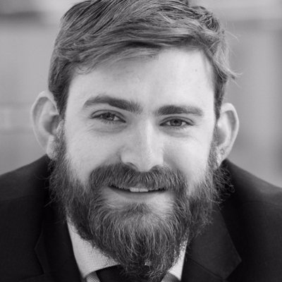

<div class="blurb">
	
	
	
	<div itemscope itemtype="http://data-vocabulary.org/Person" class="col-sm-8">
	<p class="lead"> 
		Welcome to my little corner of the internet. Free real-estate provided by Micro$oft through Github. 
	</p>
		
	<p>
		My name's <span itemprop="name">Dr Richard Matthews</span> and I'm proud to call myself a forensic scientist with specific expertise in digital forensic methodologies to inform investigations ranging from image, video and audio validation, right through to digital reconstructions for reverse engineering and preparing timelines. I conduct and prove cybercrime and digital forensic research and investigations for organisations globally.
	</p>
		
	<p>
		In short, I'm a <span itemprop="title">father</span>, <span itemprop="title">engineer</span>, and <span itemprop="title"> scientist</span>, living in <span itemprop="address" itemscope itemtype="http://data-vocabulary.org/Address"><span itemprop="region">South Australia</span></span> where I am currently employed as a Research Fellow at the Adelaide Cybercrime Laboratory attached to the Department of Sociology, Criminology and Gender Studies at <span itemprop="affiliation">the <a href="http://www.adelaide.edu,au">University of Adelaide's</a></span> Faculty of Arts, Business, Law and Economics.
	</p>
		
	<p>I'm available for contract as a <span itemprop="title">forensic consultant</span> delivering <span itemprop="title">expert opinion</span> as an expert witness across multiple jurisdictions. My specialised knowledge encompass a broad range of digital areas, aligned to the Dasreef requirements of my specialised training, study and experience. THese include:
		<ul>
			<li> Media Forensics;
			<li> Image Validation;
			<li> Digital Image Sensor Identification;
			<li> Social Media Analysis;
			<li> Timeline reconstructions;
			<li> Open Source Investigations;
			<li> Image and Video Provenance;
			<li> 3D Imaging Technologies;
			<li> 3D Printing and Advanced Manufacturing;
			<li> Biometric identifiers;
			<li> Wearables;
			<li> Sensor Pattern Noise;
			<li> Chain of custody validation;
			<li> iPhone media validation;
			<li> Analysis of cached data for interent history;
			<li> Metadata investigations;
			<li> Scientific Validation of forensic methods;
			<li> Debunked forensic methodologies;
			<li> Challenges to unscientific forensic practices;
			<li> Forensic Validation and reliability;
			<li> Systems Thinking;
			<li> Artificial Intelligence;
			<li> Machine Learning;
			<li> Generative Technologies;
			<li> Data hiding and discovery;
			<li> Forensic Standards;
			<li> Multimedia Analysis;
			<li> Vehicles;
			<li> Industrial Control Systems;
			<li> Supervisory Control and Data Acqusition (SCADA);
		</ul>
	</p>	
	<p>
		Currently my research focus is split between:
		<ul>
			<li> developing tools for forensic intelligence workflows which leverage emerging biometric identifiers and social network analysis best practices.
			<li> a literature review into the systems needed to establish a robust, trustworthy, standardised, verifiable and validated forensic laboratory in the Australian context.
			<li> development best practices for the identification and seizure of evidence at a crime scene when encountering advanced manufacturing workflows used to manufacture illicit or prohibited items.
		</ul>
	</p>
	<p>
	To assist the broader forensic community, I have a commitment to transperancy with my work. The list below is the current status of my over due research items from previous projects:
		<ul>
			<li> The <b>Forensic Acceptance and Readiness Level (FAR) framework </b> was presented at the 2022 DFRWS APAC Conference hosted in Adelaide South Australia at the University of Adelaide. With some last minute changes to the program, the presentation became the summary keynote of the conference. While the framework remains unpublished in the formal proceedings, this was due to my own ommission as I did not provide the written paper to the conference organisers. The writeup of the framework is currently in draft form and is being finalised with an intention to submit shortly. Competing priorities have prevented the formal publication of the work at this stage. It is hoped this will be resolved before the end of 2023.
			<li>  The <b> Systemic Literature Review into the State of Forensic Science Validation</b> conducted during 2021 and 2022 generally has been postponned. While there is much need for a systematic review in this space, the current state of affairs with forensic science globally means I have made the decisions to await the outcome of the changes currently being implemented in the United Kingdom with their Forensic Regulator. My postion on this topic remains the same and in light of the recent DNA lab issues in Queensland reinforces the need for quality assurance, regulation and standardisation (more stick and less carrot). Our forensic systems are vunerable and are in need of modernisation. Indeed, Australia seems to be several decades behind the rest of the world with too much reliance on the scientific knowedlge of experts and the Judiciary who acts as the gatekeeper to evidence admissibility. I draw my conclusion from the thoughts of The Honourable Mark Weinberg AO KC in his paper "Juries, judges, and junk science — expert evidence on trial"  presented to the Australian Academy of Science and Australian Academy of Law Joint Symposium, Sydney on 19 August 2020. While the argiment was made that the judiciary should be given more powers to reject invalid forensic science and act as the gatekeeper, my position is one where the system needs to be robust such that it does not rely on a single point of failure. Two sides of the same coin. It is still my intention to peform the wider system study in this area to demonstrate this argument. While part of this work was presented at the DFRWS APAC conference in 2022, competing priorities with a current grant means I lack the time to finalise the view point. As above, I hope to have this resolved within the next few months. 
		</ul>
	</p>

<p>
	As always, feel free to contact me to collaborate.
</p>

<p>
	Dr Richard Matthews<br>
	PhD GDipBA BE(Hons) MIEAust
</p>
<p>
	Last Updated Saturday 6 May 2023 at 12.44 pm ACST
</p>
		
	</div>
</div>
<!-- </div> -->


